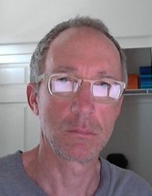

|  | Matthew John McCareyJapanese-English translator Financial translator based in Chiba, Japan. I specialize in equity research and have over 30 years of industry experience. |
| Dates | Work |
|---|---|
| Apr 2005-present | Freelance: Regular client list has included JPMorgan, Citigroup, Credit Suisse, Barclays Securities, Nomura Securities, Deutsche Securities, Morgan Stanley |
| Jun 2001-Mar 2005 | Deutsche Securities (Tokyo): Co-head of production for equity research |
| Nov 1998-Jun 2001 | Nikko Salomon Smith Barney (Tokyo): Equity translation |
| Apr 1996-Oct 1998 | Nomura Securities (Tokyo): Equity translation |
| Feb 1995-Mar 1996 | Freelance |
| Aug 1990-Jan 1995 | IBI (Tokyo): Translation of annual reports and other IR materials |
| Nov 1986-Mar 1990 | Mitsubishi Petrochemical (Mie, Japan): Systems engineer |
| May 1982-Aug 1984 | Eastman Kodak (Rochester, NY) : Electrical engineer |